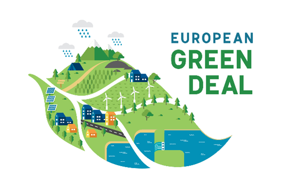
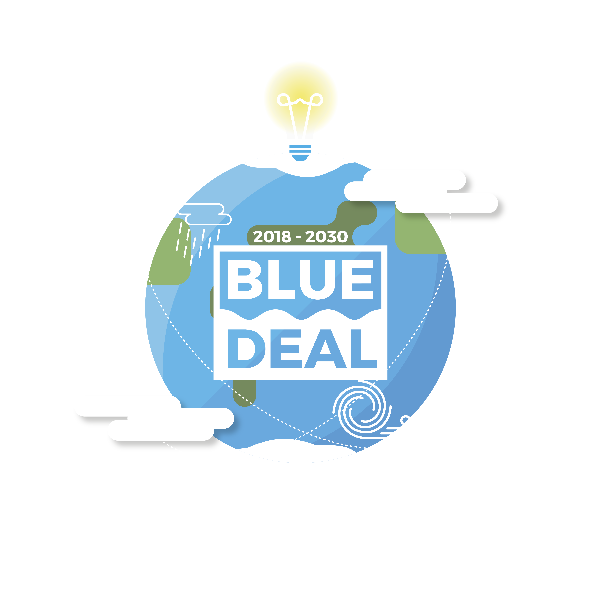
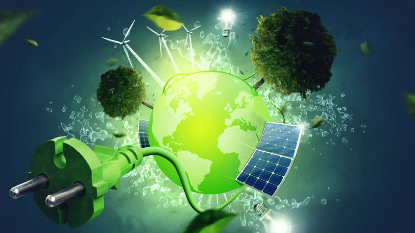
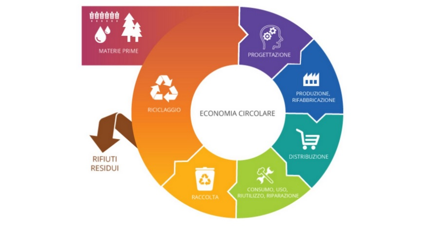

Un Futuro Sostenibile per l'Europa
Una panoramica sulle iniziative chiave per un'Europa verde e circolare.
Una panoramica sulle iniziative chiave per un'Europa verde e circolare.

Il Green Deal Europeo è l'iniziativa dell'Unione Europea per rendere l'economia più sostenibile, riducendo le emissioni di carbonio e promuovendo l'energia rinnovabile.
Clicca qui per approfondimento del testo
Il Blue Deal è l'approccio strategico dell'UE per proteggere e valorizzare gli oceani, i mari e le acque interne, affrontando la sostenibilità delle risorse marine e la protezione degli ecosistemi acquatici, con un focus su soluzioni innovative e la riduzione dell'inquinamento.
Clicca qui per approfondimento del testo
L'energia sostenibile è una forma di energia che soddisfa i bisogni attuali senza compromettere la capacità delle future generazioni di soddisfare i propri. Si basa su fonti rinnovabili come il sole, il vento e l'acqua.
Clicca qui per approfondimento
L'economia circolare è un modello di sviluppo che mira a ridurre gli sprechi e massimizzare l'uso delle risorse, promuovendo il riutilizzo, il riciclo e la riparazione dei prodotti e dei materiali.
Clicca qui per approfondimentoPer qualsiasi domanda o informazione, puoi contattarmi via email all'indirizzo: Mattiadeleoanrdis2007@gmail.com.
Sarò felice di rispondere a tutte le tue richieste!